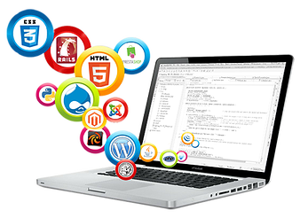
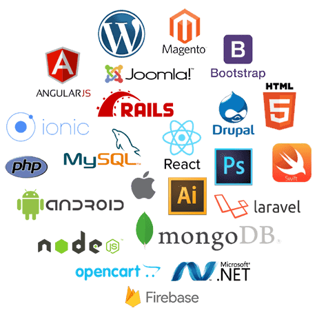

We build the digital experience
we are helping the business to grow with the mordern website,web application and digital solution.
we are helping the business to grow with the mordern website,web application and digital solution.

We provide the best digital solution that help to grow your business
Modern and responsive website
Help to improve your search engine ranking
Grow your business online
Throughout all web development services, iconic developers adheres to a quality-first approach based on ISO 9001-certified quality management system. Our comprehensive security management program with robust security controls, policies and technologies is compliant with ISO 27001 regulations.

Our business analysts focus on the needs of your target audience to perform requirements engineering and outline the scope of the solution. They also bridge the gap between business stakeholders and an IT team to keep all the involved parties aligned.
We start designing a web app with the analysis of target audience and planning convenient, quick and frictionless user journeys. Along the way, our UI designers join in to wrap the interface into a stylish cover.
Our solution architects will plan all functional components and select optimal techs for them to ensure that the business logic to be implemented is feasible and full. They will also map all API connections within the web solution and with outside systems.
Our front-end developers can implement any design idea and ensure all interface elements work properly. We work with all of the most-used JavaScript frameworks, such as Angular, React, Meteor, Vue, Next, Ember.
Our developers accurately implement the business logic of your web app on the back end. We rely on proven frameworks and ensure fast and quality coding in .NET, Java, Python, Node.js, PHP, Go.
We set up APIs to integrate your web app with corporate or third-party systems and services. App integration ensures immediate data synchronization across systems.
We guarantee that your web solution will function flawlessly, work fast, be user-friendly and secure. We have a team of skilled testing engineers to make promises like that.
We advance your web-based software to keep it efficient, competitive on the market, and compliant with all your evolving business needs. Our well-established DevOps processes let us roll out urgent updates within 1-2 days and release new, planned functional modules every 2-6 weeks.
Apart from technical expertise, many other factors influence project success and software quality. ScienceSoft’s teams approach all of them seriously. You are welcome to check the descriptions of processes and practices we rely on to deliver on goal, quality, schedule, and budget:
The page describes our approach to requirements engineering, feasibility assessment, and scoping. It also outlines our scope change management and scope creep control practices.
The page lists the factors Iconic Developers teams consider to estimate costs, shares sample top-down and bottom-up estimates, and overviews our cost optimization best practices.
We outline the controls behind our ISO 9001-certified management system, list software quality and project health KPIs our teams use, and describe quality controls specific to each SDLC stage.
We explain the scope of our cyber defense activities and describe our ISO 27001-supported security management procedures during the development project.
The page details our approach to project cost estimation and describes how we consistently control the expenditures in the course of the project to meet the agreements.
We share our key practices to manage the project time and meet a client's goals as fast as they need it.